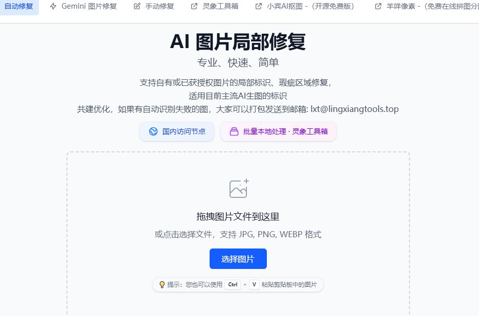

X 工具合集 · @XAMTO_AI
AI 去水印工具合集
6 个方案，按需自取
AI 生成图越来越多，水印反倒成了最扎眼的东西。这条帖整理了 5 个去水印工具 + 1 个加水印工具，覆盖视频、可灵/即梦、NotebookLM、Gemini、豆包等场景，每个都附完整链接和用法说明。

01 / TOOLS
去水印工具（5 个）+ 加水印工具（1 个）
使用建议
1. 优先使用浏览器端本地处理的工具（如 MarkCut），避免上传敏感图片到服务器。
2. 视频去水印推荐 online-video-cutter，免费版已够日常使用。
3. 可灵/即梦水印用 ClearCat，豆包水印用 cagetu，Gemini 水印用 MarkCut 替代 figtool。
4. 创作者反向操作用 jiashuiyin 加水印保护原创。
5. 去水印后的图片请确保用于合法用途，尊重他人版权。